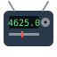
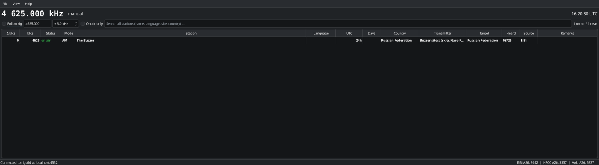
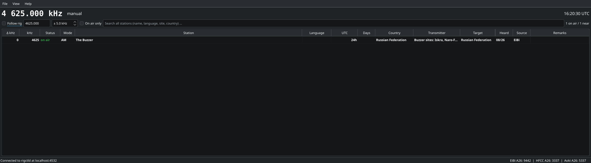

On The Dial otd
Who is on the frequency I am tuned to?
6 676.000 kHz Bangkok Volmet · on air · USB · Thailand
On The Dial is a small desktop program for shortwave listeners. It follows the VFO of your
receiver through Hamlib's rigctld and shows which stations are scheduled on or near
that frequency right now: broadcasters, utility stations, time signals, and oddities such as
The Buzzer on 4625 kHz.


What it does
Follows your rig
Connects to rigctld on port 4532, reconnects by itself, and shows the tuned frequency and mode in large digits.
Knows who is on air
Every entry is checked against UTC: time window, weekday rules, validity dates, summer and winter seasons. On-air stations are listed first.
Three schedule databases
EiBi, HFCC and the Aoki list side by side, each switchable, cached locally and refreshed at most once a week.
Search anywhere
Type "buzzer" and see where it is, on-air hits first with the distance from your VFO. Double-click a row to tune the rig there.
Mode column
AM, USB, LSB, CW, DRM, RTTY, FAX or HFDL, derived from the markers in each source.
Your own list
Heard something the lists do not know? Add it with a note, it shows up like any other entry and can be exported. A right-click opens the Signal Identification Wiki for the mode or the station.
Small and self-contained
C++ and Qt 6, a single binary of a few hundred kilobytes, one SQLite file for schedules and settings. No hamlib dependency.
Schedule data
On The Dial would be nothing without the people who compile these lists. Thank you.
| Source | Notes |
|---|---|
| EiBi by Eike Bierwirth | Broadcast and utility schedule, free for use in third-party software. |
| HFCC public data | Official broadcaster registrations per season. |
| Aoki / Bi Newsletter (NDXC) | The well known frequency list from the Nagoya DXers Circle. |
Download
Version 1.0.0, built 2026-09-20. No installation needed.
| Platform | File | How to run |
|---|---|---|
| Windows 10/11, 64-bit | otd-1.0.0-windows-x64.zip (16 MB) | Unzip anywhere, start otd.exe. Hamlib's rigctld is included, see Connecting your radio. |
| Linux, 64-bit | otd-1.0.0-x86_64.AppImage (32 MB) | Make it executable (chmod +x) and run it. Works on distributions from 2022 on (glibc 2.35). Install libhamlib-utils or hamlib for rigctld. |
| macOS | not yet | Build from source with Qt 6 and CMake. |
SHA-256 checksums: SHA256SUMS.txt. Windows may warn about an unknown publisher because the program is not code-signed; that is expected for a hobby project.
Build it yourself
On The Dial is free software under the GNU GPL v3. The source code is at github.com/oh2gba/onthedial, where the same downloads are attached to each release. Building needs nothing but Docker:
git clone https://github.com/oh2gba/onthedial.git
cd onthedial
./build.sh # builds and runs the tests inside a container
./build/otd # follow rigctld on localhost:4532
./package-linux.sh # AppImage into dist/
./package-windows.sh # Windows zip into dist/ (cross-compiled)Useful options: --frequency 4625 starts in manual mode at a frequency,
--data-dir ~/otd keeps everything in one directory.
Requirements
- A receiver or transceiver supported by Hamlib, or an SDR program with a rigctl server such as gqrx or SDR++. See Connecting your radio. Without a rig you can type frequencies by hand.
- Linux with Qt 6.8 runtime libraries (Debian 13, Ubuntu 24.10 or newer, Fedora 41 or newer, and similar).
- Internet access for the weekly schedule refresh.